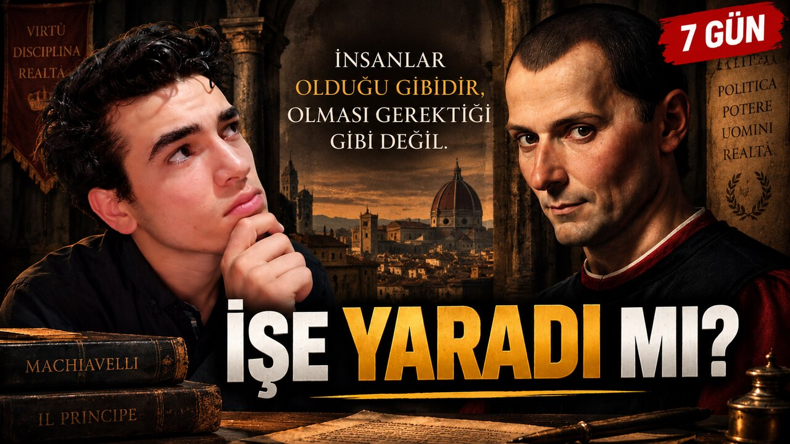

Projeler.
Bir fikrin kitaptan çıkıp
gerçek hayata karıştığı yer.
Machiavelli deneyi tamamlandı; Jules Payot’nun İrade Terbiyesi kitabını okuyorum. Tamamlanan dosyanın notları ve sıradaki araştırma burada.
Tamamlanan deney
21–27 Eylül 2026Niccolò Machiavelli / Prens
Machiavelli’nin
üç düşüncesi.
Machiavelli’den uyarlanan üç ilkenin yedi günlük notları.
Prens kitabının siyasal bağlamından kişisel hayata etik biçimde uyarlanan üç davranış kuralı 21–27 Eylül 2026 arasında sınandı.
Deney tamamlandı · video hazırlanıyor
Deney dosyasını oku
Kontrol / Zaman / Karar
Deney devam ediyor60 GÜNLÜK DAVRANIŞ DENEYİ
Kontrol Bende mi?
60 gün boyunca kendi davranışlarım üzerindeki kontrolü gözlemliyorum. Kararlarımı ve zorlandığım anları kayıtlarla değerlendireceğim.
Deney dosyasını okuSıradaki araştırma
Uygulama henüz başlamadıSIRADAKİ PROJEMİZ
Jules Payot — İrade Terbiyesi
İrade gerçekten eğitilebilir mi?
İrade doğuştan gelen değişmez bir özellik mi, yoksa bilinçli çalışmalarla geliştirilebilir mi? Jules Payot’nun İrade Terbiyesi kitabındaki düşünceleri inceliyoruz. Okuma sonrasında yöntemleri modern araştırmalarla karşılaştırıp seçilen ilkeleri gerçek hayatta test etmeyi planlıyoruz.
Araştırma dosyasını incele